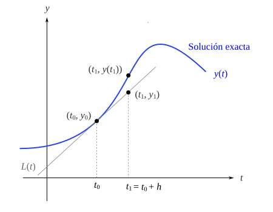
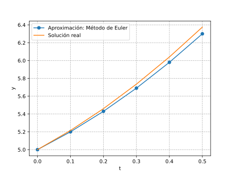
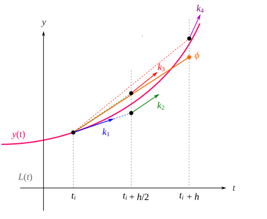
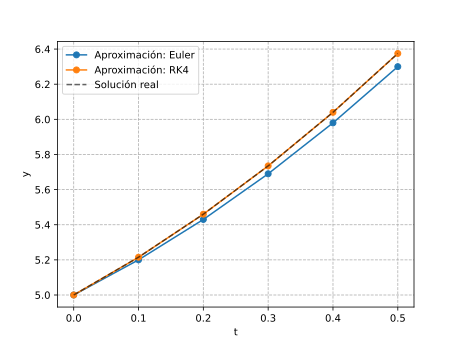

Métodos numéricos para resolver ecuaciones diferenciales#
Las ecuaciones diferenciales se utilizan para modelar problemas en ciencias e ingeniería que implican el cambio de una variable con respecto a otra. La mayoría de estos problemas requieren la solución de un problema de valor inicial, es decir, la solución de una ecuación diferencial que satisface una condición inicial dada.
En situaciones comunes de la vida real, la ecuación diferencial que modela el problema es demasiado complicada para resolverla exactamente y se adopta uno de dos enfoques para aproximar la solución. El primer enfoque consiste en modificar el problema simplificando la ecuación diferencial a uno que se puede resolver exactamente y luego usar la solución de la ecuación simplificada para aproximar la solución al problema original. El otro enfoque, utiliza métodos para aproximar la solución del problema original. Este es el enfoque que se adopta con mayor frecuencia porque los métodos de aproximación dan resultados más precisos e información de error realista.
Los métodos que se abordarán en esta sección no producen una aproximación continua a la solución del problema de valor inicial. Más bien, las aproximaciones se encuentran en ciertos puntos específicos y, a menudo, igualmente espaciados. Si se necesitan valores intermedios, se utiliza algún método de interpolación.
\( \newcommand{\rbr}[1]{ \left( #1 \right) } \newcommand{\sbr}[1]{ \left[ #1 \right] } \newcommand{\cbr}[1]{ \left\{ #1 \right\} } \newcommand{\abr}[1]{ \langle #1 \rangle } \)
Método de Euler#
El método de Euler es la técnica de aproximación más elemental para resolver problemas con valores iniciales. Aunque rara vez se usa en la práctica, la simplicidad de su derivación puede usarse para ilustrar las técnicas involucradas en la construcción de algunas de las técnicas más avanzadas, sin el engorroso álgebra que acompaña a estas construcciones.
El objetivo del método de Euler es obtener aproximaciones al problema de valor inicial:
El método de Euler consiste en ir trazando rectas tangentes sucesivas a partir del valor inicial. Comenzamos linealizando la solución desconocida \(y(t)\) de (87) en \( t=t_0 \):
La gráfica de esta linealización es una línea recta tangente a la gráfica de \(y=y(t)\) en el punto \((t_0, y_0)\) y cuya pendiente está dada por \(f(t_0, y_0)\), tal como se puede observar en la Figura Fig. 105:
{kind=link}

Fig. 105 Aproximación mediante el método de Euler#
Ahora, considerando un incremento \(h\) positivo en el eje \(t\), al reemplazar \(t\) por \(t_1 = t_0 + h\) en (88) se tiene:
Donde \(y_1 = L(t_1)\). En la línea tangente, el punto \((t_1, y_1)\) es una aproximación al punto \((t_1, y(t_1))\) ubicado sobre la curva solución (ver Figura \ref{fig:euler_method}). La exactitud de la aproximación \(y_1 \approx y(t_1)\) depende en gran medida del tamaño del incremento \(h\). La recomendación es que debemos elegir este tamaño del paso lo razonablemente pequeño. Ahora repetimos el proceso mediante una segunda línea tangente en \((t_1, y_1)\). Tomando como punto de base a la aproximación anterior (\(t_1, y_1\)) podemos obtener una aproximación \(y_2 \approx y(t_2)\) correspondiente a dos pasos de longitud \(h\) desde \(t_0\), es decir, \(t_2 = t_1 + h = t_0 + 2h \), así:
Si continuamos de esta manera, las sucesivas aproximaciones se pueden expresar de manera general como:
Donde \(t_i = t_0 + ih\), donde \(i=0,1,2,\cdots\). Observe que cada aproximación se realiza con base en la estimación previa.
Ejemplo Método de Euler
Utilice el método de Euler para obtener una aproximación a \(y(0.5)\), con un paso \(h=0.1\).
Solución
Se observa que \( f(t,y) = 3t + 2 \), además \( t_0=0 \) y \( y_0 = 5 \). Para la primera aproximación se tiene que:
Siendo \( t_1 = t_0 + h = 0 + 0.1 = 0.1 \). Para \(y_2\) se tiene que:
De manera similar, para las subsiguientes aproximaciones:
Así, la aproximación buscada es \( y_{aprox}(0.5) \approx y_5 \approx 6.3 \). Se puede verificar de forma sencilla que la solución exacta para este problema de valor inicial está dada por:
Entonces, el valor real de la función solución en \(t=0.5\) es \( y(0.5) = 6.375 \). En la Figura Fig. 106 se pueden observar la curva solución y la aproximación realizada mediante el método de Euler en el intervalo \( 0 \leq t \leq 0.5 \). Podemos notar que conforme nos alejamos de la aproximación del valor inicial, la diferencia entre la función solución y la aproximación se hace un poco más evidente.
{kind=link}

Fig. 106 Ejemplo del método de Euler#
Métodos de Runge-Kutta#
Los métodos de Runge-Kutta son una familia de métodos numéricos para aproximar soluciones de ecuaciones diferenciales ordinarias. Son métodos iterativos, lo que significa que se basan en aproximaciones sucesivas para obtener la solución. La idea básica detrás del método de Runge-Kutta es aproximar la solución de una EDO mediante una serie de pasos. En cada paso, se calculan varios valores intermedios que se utilizan para mejorar la aproximación.
Los métodos de Runge-Kutta tienen la forma generalizada:
donde \(\phi(t_i, y_i, h)\) se conoce como función incremento, la cual puede interpretarse como una pendiente representativa en el intervalo. La función incremento se escribe en forma general como:
donde las \(a\) son constantes y las \(k\) son:
donde las \(p\) y las \(q\) son constantes. Observe que las \(k\) son relaciones de recurrencia. Es decir, \(k_1\) aparece en la ecuación \(k_2\), la cual aparece en la ecuación \(k_3\), etc. Como cada \(k\) es una evaluación funcional, esta recurrencia vuelve eficientes a los métodos RK para cálculos en computadora. Es posible tener varios tipos de métodos de Runge-Kutta empleando diferentes números de términos en la función incremento especificada por \(n\).
Método de Runge-Kutta de cuarto orden#
El más popular de los métodos Runge-Kutta es el de cuarto orden. Hay un número infinito de versiones. La siguiente, es la forma comúnmente usada y, por lo tanto, le llamamos método clásico de Runge-Kutta de cuarto orden (o RK4 en forma abreviada):
donde:
Las constantes \(k_1\), \(k_2\), \(k_3\) y \(k_4\), representan una pendiente calculada, tal como se muestra en la Figura Fig. 107. Cada aproximación es un promedio ponderado de estas pendientes. Observe que \(k_2\) se calcula en el medio paso \( t_i + 0.5 h \) y utilizando el valor previamente estimado mediante \(k_1\), algo similar ocurre con \(k_3\) y \(k_4\).
{kind=link}

Fig. 107 Pendientes ponderadas del método RK4#
Ejemplo. Runge-Kutta de 4to. orden. Utilice un método de Runge-Kutta de cuarto orden para obtener una aproximación al problema de valor inicial en el intervalo \( 0 \leq t \leq 0.5 \), con un paso \(h=0.1\).
Solución
Calculamos las pendientes para la primera aproximación con \( t_0 = 0 \) y \( y_0 = y(t_0) = 5 \):
Entonces, la aproximación \(y_1\) está dada por:
Para la siguiente aproximación \(y_2\), con \(t_1 = 0.1\) y \(y_1 = 5.215\), se tiene que:
Las anteriores y las subsecuentes aproximaciones en el intervalo propuesto se resumen en la siguiente tabla:
\(t_i\) |
\(k_1\) |
\(k_2\) |
\(k_3\) |
\(k_4\) |
\(y_i\) |
|---|---|---|---|---|---|
0.10 |
2.0000 |
2.1500 |
2.1500 |
2.3000 |
5.2150 |
0.20 |
2.3000 |
2.4500 |
2.4500 |
2.6000 |
5.4600 |
0.30 |
2.6000 |
2.7500 |
2.7500 |
2.9000 |
5.7350 |
0.40 |
2.9000 |
3.0500 |
3.0500 |
3.2000 |
6.0400 |
0.50 |
3.2000 |
3.3500 |
3.3500 |
3.5000 |
6.3750 |
En la Figura rk4_numed_example_01 se observan las gráficas de las aproximaciones mediante el método de Euler y el de Runge-Kutta de cuarto orden (ambos con \(h=0.1\)). Se puede notar que la aproximación de RK4 prácticamente cae sobre la curva solución real.
{kind=link}

Ecuaciones diferenciales ordinarias de segundo orden#
El problema de valor inicial de segundo orden se puede escribir de forma general como:
Este problema se puede escribir como un conjunto de dos ecuaciones diferenciales de primer orden, haciendo la sustitución:
Entonces:
Las ecuaciones (90) y (91) conforman un sistema de dos ecuaciones diferenciales de primer orden. Ahora el problema se centra en determinar las funciones solución \(y\) y \(u\) sujetas a las condiciones iniciales:
Este sistema de ecuaciones diferenciales se puede resolver numéricamente, aplicando algún método en particular a cada una de las ecuaciones.
Método de Euler#
Así pues, la aproximación mediante el método de Euler para un sistema de EDO de primer orden como el de las ecuaciones (90) y (91), se puede escribir como:
Ejemplo. Método de Euler, EDO de segundo orden.
Aproxime la solución para:
En el intervalo \( 0 \leq t \leq 1 \), con un paso de \(h=0.1\).
Solución:
La EDO de segundo orden se puede escribir como un sistema de EDO de primer orden mediante la sustitución \(\dot{y}=u\), así:
La primera aproximación, con \(f(t,y,u)=-u-4.25y\), \(t_0 = 0\), \(y_0 = -1\) y \(u_0 = 2\), está dada por:
Para la segunda:
Las sucesivas aproximaciones se resumen en la siguiente tabla:
\(t_i\) |
\(y_i\) |
\(u_i\) |
|---|---|---|
0.00 |
-1.000000 |
2.000000 |
0.10 |
-0.800000 |
2.225000 |
0.20 |
-0.577500 |
2.342500 |
0.30 |
-0.343250 |
2.353688 |
0.40 |
-0.107881 |
2.264200 |
0.50 |
0.118539 |
2.083630 |
0.60 |
0.326902 |
1.824888 |
0.70 |
0.509390 |
1.503466 |
0.80 |
0.659737 |
1.136628 |
0.90 |
0.773400 |
0.742577 |
1.00 |
0.847658 |
0.339624 |
Sistemas de ecuaciones diferenciales de primer orden#
Considerando que se tiene un sistema de \(n\) ecuaciones diferenciales de primer orden de la forma:
Sujetas a las condiciones iniciales:
El sistema de ecuaciones y las condiciones iniciales se pueden escribir en forma vectorizada como:
Donde:
Observe que la ecuación vectorial (93) es análoga a la ecuación escalar (87). Las expresiones de las secciones previas se pueden utilizar para resolver el sistema de ecuaciones en forma vectorizada, haciendo los ajustes correspondientes en la formulación.
Método de Euler#
Cada aproximación, mediante el método de Euler, del problema de valor de inicial (93) se puede determinar como sigue:
donde:
Método de Runge-Kutta de cuarto orden#
Cada aproximación, mediante el método de Runge-Kutta de cuarto orden, del problema de valor de inicial (93) se puede determinar como sigue:
donde:
Sistemas de ecuaciones diferenciales de segundo orden#
Un sistema de \(n\) ecuaciones diferenciales de segundo orden:
Sujeto a las condiciones iniciales:
Se puede escribir como un sistema de ecuaciones diferenciales de primer orden, haciendo la sustitución descrita en la sección Ecuaciones diferenciales ordinarias de segundo orden para cada una de las ecuaciones, es decir:
Para \(k=1, 2, \cdots, n\). Así pues, el sistema de EDO de segundo orden se puede reescribir como sigue:
Sujeto a las condiciones iniciales:
Un problema de valor de inicial como este se puede resolver de la manera que se describe en la sección Sistemas de ecuaciones diferenciales de primer orden.
Problemas#
Utilice el método de Runge-Kutta de cuarto orden para aproximar la solución del problema de valor inicial de segundo orden. Compare las aproximaciones obtenidas con la solución real.
Utilice el método de RK4 para aproximar la solución al siguiente sistema de ecuaciones diferenciales de primer orden.
Compare las aproximaciones obtenidas con las soluciones reales dadas por:
Utilice el método de Runge-Kutta de cuarto orden para aproximar la solución al siguiente sistema de ecuaciones diferenciales de primer orden.
Compare las aproximaciones obtenidas con las soluciones reales dadas por:
La dinámica de un manipulador simple de un grado de libertad está determinada por la siguiente ecuación diferencial de segundo orden:
Donde \(m_1\) es la masa del manipulador, \( g \) la constante de aceleración de la gravedad y \( \tau_1 \) una fuerza generalizada aplicada al manipulador. Utilice el método de Euler y el método de Runge-Kutta de cuarto orden para aproximar la solución de la ecuación diferencial en el intervalo \( 0 \leq t \leq 1 \), bajo las siguientes condiciones iniciales y tamaño de paso:
Considere que \(m_1 = 0.5 \text{ kg}\), \(g = 9.81 \text{ m/s}^2\) y \(\tau_1 = 5 \) N.